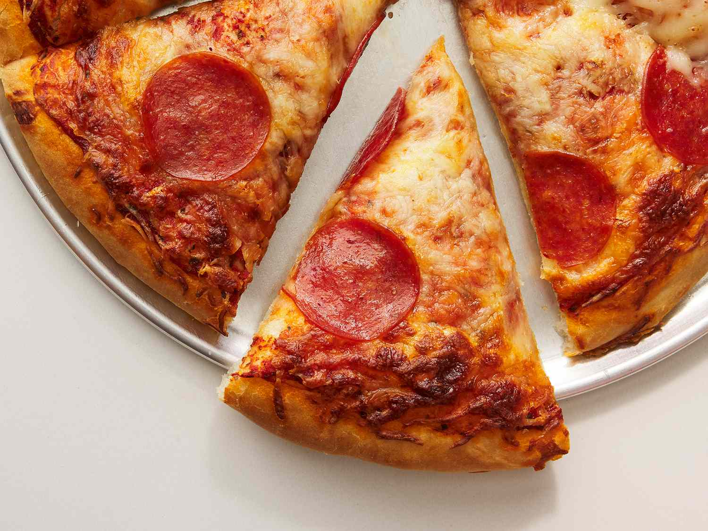

Pizza

This is a recipe to make homemade pizza, the best Italian dish in the whole world. Pizza is famous for tasiting really good, and there's many different ways to make it.
Ingredients
- All-purpose flour
- Dry yeast
- Warm water
- Onion
- Tomato
- Capiscum
- Cheese
- Tomato ketchup
Steps
- Prepare the pizza dough
- Prepare the pizza base
- Chop all the vegetables for the piza
- Bake, then garnish!